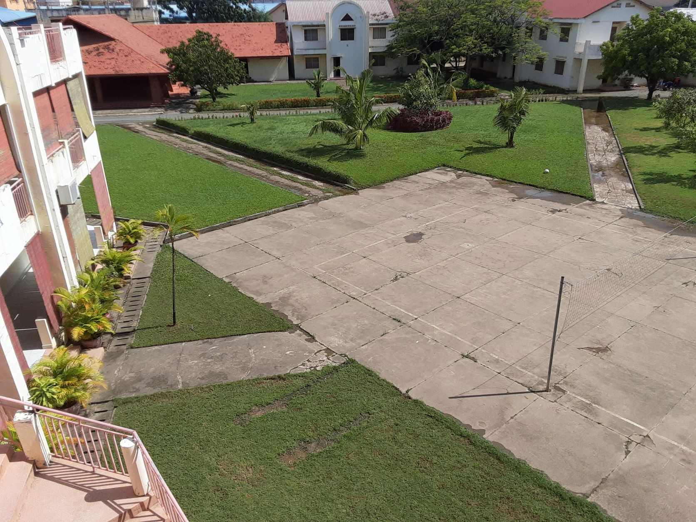
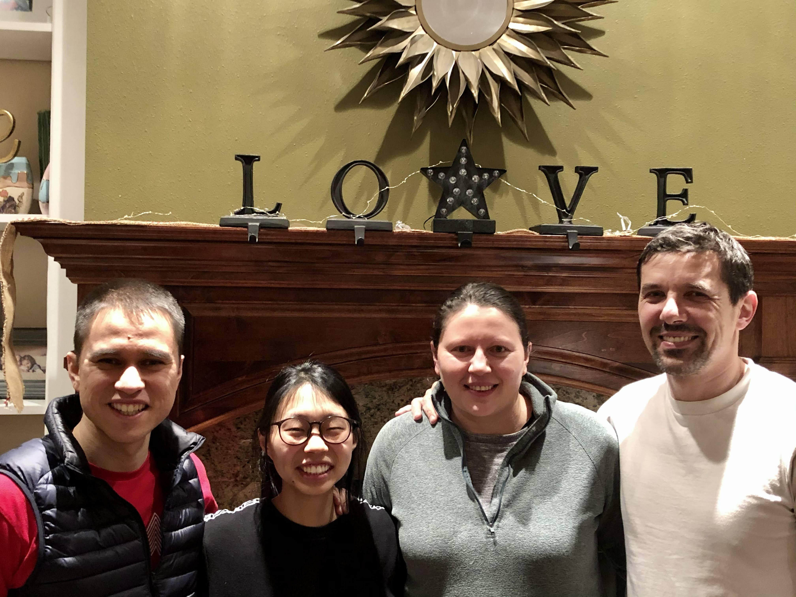
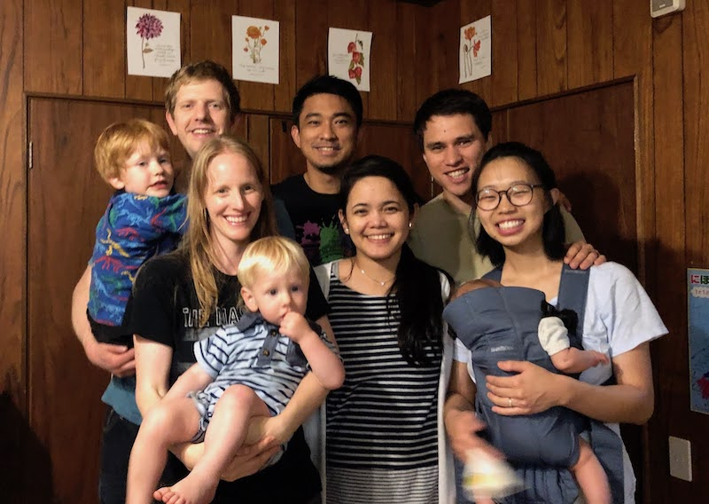
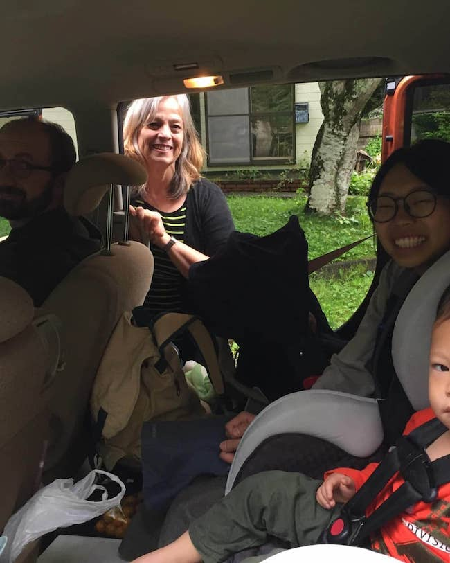
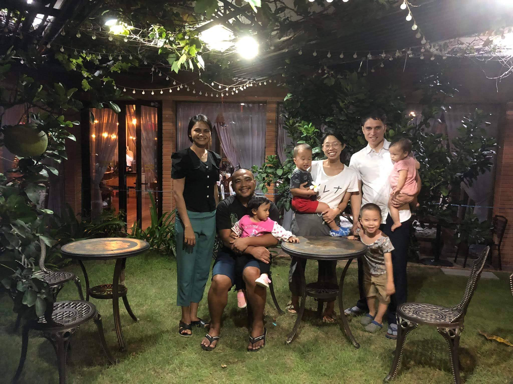

God's Provision
Dear Brothers and Sisters in Christ,
We’re excited to share with you some good news! Starting in October, Ryan will be able to take an indefinite break from his software work, which he started in 2016.
We share this with you for three main reasons: to thank you for your partnership in the Great Commission work that we are a part of here in Cambodia, for your continued accountability in financial matters, and to let you know so you can praise the Lord with us for the door He has opened up for us to spend more focused time investing in the Cambodian Church.
To be clear, this is not a change of philosophy of ministry or conviction, but rather a change of circumstances. We are grateful to have had the opportunity to work when the need arose and if the need arose again, would be grateful to work again. But for now we are looking forward to a season where we can have more time and flexibility to be involved at the Phnom Penh Bible School, at our local church, and in addition to continue to explore other opportunities in theological education outside of Phnom Penh.
God has provided in many ways, but most poignantly through the prayers, giving, and overall support of His church. We are so grateful for care packages, phone calls, letters of encouragement, help writing resumes, hand-me-downs, money saving tips, hospitality while we were traveling, and more. This from the American Church to be sure, but as we were to think about just the last couple years, also the Japanese church during our six months (!) there in 2020, and most recently the Cambodian church and greater missionary community, itself comprised of representatives from churches hailing from around the world, including Europe, the Pacific Islands, East Asia, Australia, India, and more.

One of our greatest desires for the church here in Cambodia is to see a greater heart and involvement in the Great Commission work of making disciples of all the nations, proclaiming Christ’s reign and authority which transcends all geographic, national, language and cultural borders. We have been overjoyed to see more and more evidence of this heart in the Khmer brothers and sisters here, particularly in this last year and a half. Likewise, this is our desire for the church in America as well and that is why we are grateful to God to see this in you all.
In a future update we can explain in more detail about future plans and new opportunities in light of this development, but for now, we want to emphasize our gratitude for your heart for the nations, your sacrificial giving, and your care for us personally.
For His glory,
Ryan and Rebekah